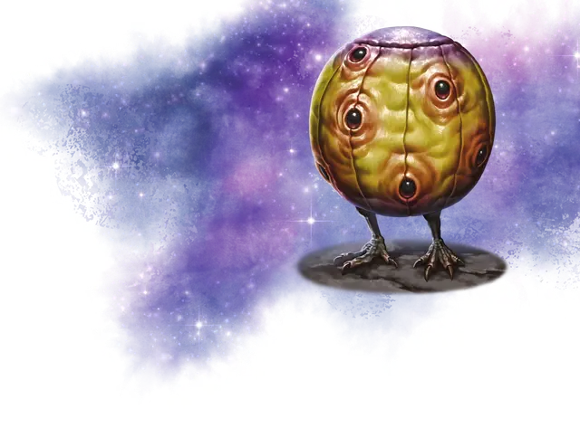

Шарик-кошмарик
Goon Balloon
Средняя Аберрация, хаотично-злая

Класс Доспеха 10
Хиты 6 (1к8 + 2)
Скорость 20 футов, лазая 20 футов
| мод | спас | ||
|---|---|---|---|
| СИЛ | 10 | +0 | +0 |
| ЛОВ | 11 | +0 | +0 |
| ТЕЛ | 14 | +2 | +4 |
| мод | спас | ||
|---|---|---|---|
| ИНТ | 11 | +0 | +0 |
| МДР | 14 | +2 | +4 |
| ХАР | 4 | −3 | −3 |
Навыки Восприятие +6
Уязвимость к урону колющий
Чувства тёмное зрение 60 футов, пассивное Восприятие 16
Языки Глубинная речь
Опасность 1/8 (25 опыта)
Бонус мастерства +2
Особенности
Лопание. Шарик лопается, если его хиты снижаются до 0, выпуская ядовитый газ сферой радиусом 10 футов с центром на себе. Существа в этой области должны преуспеть в спасброске Телосложения Сл 12, иначе станут отравленными на 1 минуту. Отравленное существо может повторять спасбросок в конце каждого своего хода, оканчивая на себе эффект в случае успеха.
Необычная природа. Шарик не нуждается в воздухе, питье и еде.
Действия
Мультиатака. Шарик-кошмарик совершает две атаки Когтями.
Коготь. . Рукопашная атака оружием: +2 к попаданию, досягаемость 5 фт., одна цель. Попадание: 3 (1к6) рубящего урона.
Сверкающий глаз. Волшебный калейдоскопический свет исходит от одного из глаз шарика, когда тот нацеливается на существо, которое он может видеть в пределах 30 футов. Цель должна совершить спасбросок Мудрости Сл 12, получая 6 (1к12) урона психической энергией при провале или половину этого урона при успехе.
Бонусные действия
Плавание по воздуху. Шарик перемещается на расстояние до 20 футов по вертикали в одном направлении, не провоцируя атаки. Если он заканчивает это движение в воздухе, то остаётся парить на месте. Его невозможно сбить с ног, пока он парит.
Описание
«Мы обнаружили нескольких существ в астральной алмазной шахте на краю Серого космоса. Шахтеры попросили нас уничтожить их. Но наш колдун, свободно владеющий Глубинной речью, сумел убедить этих луковицеобразных тварей мирно переехать. Они настойчиво потребовали, чтобы мы отвезли их на маленькую деформированную луну, отсутствующей на наших картах. Жуткий страх охватывает меня. Что, если они заведут нас в ловушку?»
- Последняя запись в дневнике Аркебуза Грейвса, старпома-гиффа с корабля-осы "Молния"
Шарик-кошмарик похож на пляжный мяч с когтистыми лапами диаметром 5 футов. На внешней поверхности круглого воздушного мешка существа расположены немигающие глаза, позволяющие ему видеть сразу во всех направлениях. Эти глаза могут испускать калейдоскопический свет, разрушающий разум врагов шарика-кошмарика.
Существо говорит, пропуская воздух через скрытое отверстие на нижней стороне. Когда шарик-кошмарик умирает, воздух внутри его мешка превращается в ядовитый газ, который вырывается из лопнувшего тела и может отравить других существ рядом с ним.
Несмотря на то, что шарики-кошмарики могут выглядеть игривыми и безобидными, они абсолютно подлые и жестокие существа. Они любят наблюдать за страданиями и причинять боль другим существам.